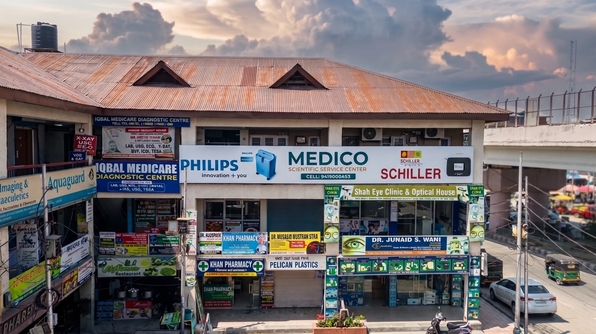
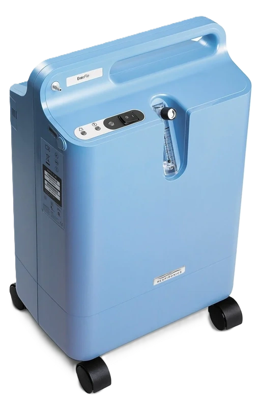
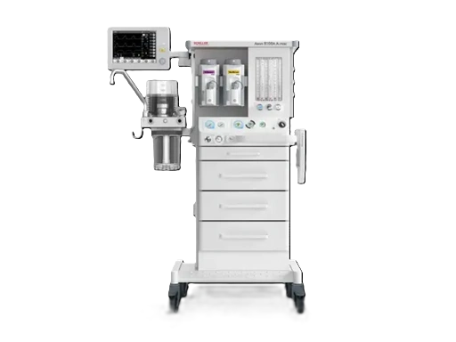
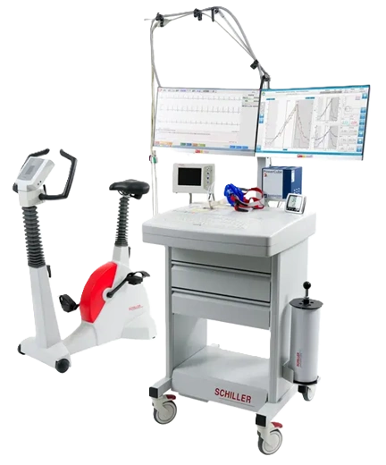
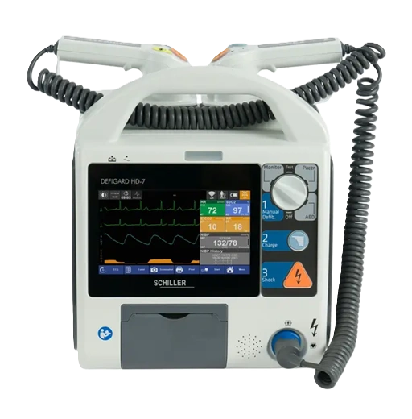
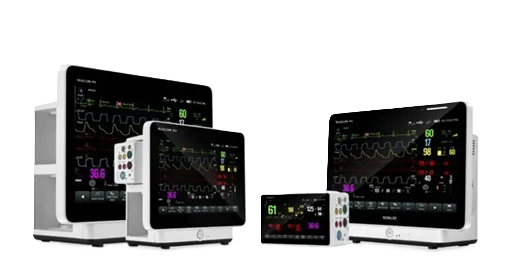
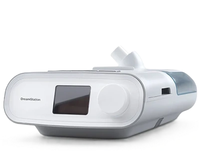
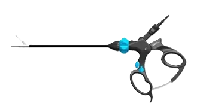

MEDICO.
Kashmir's authorized distributor for Philips, Schiller & Shalya — serving hospitals and families since 2000.







Explore a wide range of
Medical Equipment.
Oxygen Dynamics
High-yield concentrators and portable delivery systems engineered for uninterrupted respiratory support.
Anaesthesia
Vaporization and precise gas delivery workstations for the modern operating theater.
Diagnostics
Real-time ECG, patient monitoring, and diagnostic instrumentation for accurate clinical assessment.
Emergency & Resuscitation
Critical rapid-response defibrillation and life-saving resuscitation devices for emergency trauma centers.
Critical Care
Comprehensive multiparameter monitoring and high-acuity life support systems for ICU environments.
Sleep & NIV
CPAP, BiPAP, and APAP therapy systems for sleep apnea treatment and respiratory support at home or in clinic.
Surgery
High-fidelity laparoscopic instruments, electrosurgical units, and advanced imaging for minimally invasive procedures.
Supply & Installation
End-to-end delivery and professional on-site installation of all equipment across Jammu & Kashmir.
Maintenance & AMC
Preventive maintenance, calibration, and annual maintenance contracts to keep equipment at peak performance.
Staff Training
Clinical orientation and hands-on training programs for hospital staff on all supplied equipment.
7-Day Technical Support
Round-the-week repair, troubleshooting, and emergency technical support — no days off.
About Us
Over 25 Years of Excellence
in Medical Equipment.
Since 2000, Medico Scientific Service Centre has been at the forefront of providing high-quality respiratory and life-support medical equipment to healthcare providers across Jammu & Kashmir and beyond.
Based in Srinagar, we specialize in oxygen concentrators, CPAP/BiPAP machines, and portable medical oxygen devices. Our comprehensive services include supply, installation, technical support, and equipment maintenance for hospitals, clinics, and healthcare facilities.
Under the leadership of Mr. Syed Naseer Andrabi, we pride ourselves on our extensive client base and commitment to exceptional service, ensuring healthcare providers receive the highest quality medical equipment and support.
Medico. Through the Eyes
of
Our
Customers.
Hear from those who trusted Medico Scientific Service Center in their journey of care and innovation.
"The best service providers... Very cooperative staff. Flawless compliance and maintenance routines."
"Very professional and prompt services. The hardware quality and post-sale courtesies are too obvious."
"Best for CPAP, BIPAP, and critical medical equipments in Srinagar region. Unmatched expertise."
"It's one of the best service centres in Kashmir. The owner is highly knowledgeable, and the staff is intensely professional."
"C-pap is one of the best products. Using it for my father from last few months. His condition has improved vastly due to the reliable equipment."